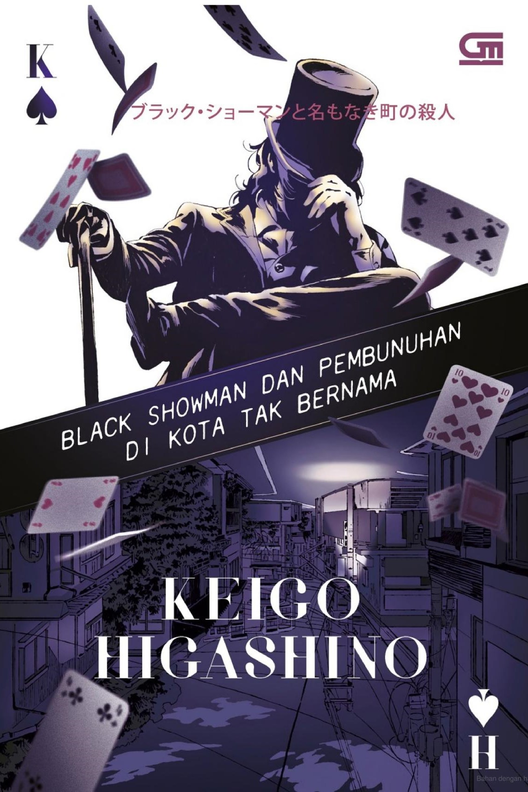

| Home | Best Seller |
|  | Judul : Black Showman dan Pembunuhan di Kota Tak Bernama Penulis : Keigo Higashino Tahun : 2021 Jumlah Halaman : 516 halaman Penerbit : Gramedia Pustaka Utama Harga : Rp119.000 |
Sinopsis Novel Black Showman dan Pembunuhan di Kota Tak Bernama |
| Pembunuhan dapat terjadi di mana saja dan kapan saja. Tak terkecuali di sebuah kota kecil yang terpencil, dan hampir terlupakan. Kota yang juga sedang dilanda wabah pandemi Covid-19.
Seorang mantan guru SMP bernama Kamio Eiichi ditemukan tewas dengan bekas cekikan di halaman rumahnya sendiri. Semasa ia masih mengajar, Kamio Eiichi adalah sosok guru yang disegani oleh murid-muridnya.
Bahkan, selepas ia pensiun mengajar pun, masih banyak murid yang menghubunginya untuk meminta nasihat atau bantuan. Polisi tidak tahu apakah ini pembunuhan yang direncanakan,
pembunuhan yang tak disengaja, atau aksi pencurian yang akhirnya menjadi pembunuhan. Oleh karena polisi mengetahui bahwa korban kerap kali bertemu dengan para mantan muridnya, tentu saja kemudian para
mantan murid korban yang saat itu sedang pulang ke kota itu untuk menghadiri reuni, menjadi masuk ke dalam daftar orang-orang yang dicurigai. Polisi yang menyelidiki kasus ini masih sangat kebingungan untuk mencari sosok yang keji ini.
Si pelaku pembunuhan di sisi lain lega, karena ia berpikir bahwa identitasnya tak akan pernah ketahuan. Di tengah penyelidikan yang tak berujung, putri Kamio Eiichi yang tinggal jauh di
Tokyo tiba-tiba datang ke kota itu bersama dengan pamannya yang merupakan mantan pesulap eksentrik. Oleh karena kinerja polisi yang dinilai tidak efektif dan terlalu lambat, mereka berdua akhirnya berupaya mencari dan menyelidiki sendiri tentang penyebab dan siapa pelaku utama dari kejadian pembunuhan tersebut. Mereka akhirnya ikut menyelidiki kasus pembunuhan ini, mencari tahu apa yang sebenarnya terjadi dan siapa yang tega membunuh Kamio Eiichi. |
Kelebihan Novel Black Showman dan Pembunuhan di Kota Tak Bernama |
| Meskipun novel Black Showman dan Pembunuhan di Kota Tak Bernama ini merupakan cerita fiksi, Keigo Higashino mampu menyelipkan realita dunia dengan menggunakan latar kondisi dunia yang pada saat itu dilanda wabah pandemi Covid-19. Melalui latar tersebut, Keigo Higashino juga mengangkat isu yang ditimbulkan pandemi Covid-19, seperti sulitnya untuk menjalankan berbagai sektor yang fundamental, dan perubahan besar dalam kehidupan bermasyarakat. Hal ini juga kemudian mampu membuat para pembaca lebih paham akan kondisi latar cerita, karena relevan dengan dunia nyata. Tentunya dapat diketahui dari reputasi Keigo Higashino sebagai penulis novel ini, juga genre novel ini adalah misteri, novel ini menyajikan cerita yang seru dan tidak membosankan. Novel misteri ini akan mengajak para pembaca ikut menyelidiki kasus pembunuhan ini dengan mencari bukti-bukti bersama putri Kamio Eiichi beserta sang paman yang eksentrik. Keigo Higashino juga mampu memberikan alibi yang sama kuatnya kepada masing-masing tokoh yang dicurigai, sehingga pembaca akan menemukan kesulitan dalam menebak sosok pelaku sebenarnya. Hal ini kemudian menambah keseruan novel misteri ini yang membuat pembaca terus merasa penasaran. Keigo Higashino mampu membangun karakter yang menarik perhatian pembaca dan dinilai pas dengan perannya di cerita ini. Mulai dari dua tokoh utama, yakni putri Kamio Eiichi dan pamannya, para mantan murid korban, para polisi, dan juga calon suami putri Kamio, semuanya dapat menarik hati pembaca. Latar belakang seluruh tokoh pun diceritakan secara detail. Keigo Higashino juga menyajikan dinamika emosi antar para tokoh dengan apik. Selain itu, Keigo tidak melulu intens menyajikan misteri terus-menerus dalam kisah ini. Dalam novel ini juga dapat ditemukan adegan selingan yang seru dan lucu, seperti contohnya hubungan pertemanan putri Kamio dengan teman-teman sekolahnya dan reuni mereka, yang dapat membuat para pembaca ikut bernostalgia bersama mereka. Di bagian cerita menuju akhir, Keigo Higashino mulai sedikit demi sedikit memberikan jawaban atas misteri pembunuhan ini dan mampu menghadirkan plot twist yang tidak mudah ditebak oleh para pembaca. Keigo Higashino juga menyelipkan sejumlah trivia tentang budaya populer di Jepang, juga beberapa hal yg berhubungan dengan novel detektif. Hal ini tentunya dapat menambah wawasan pembaca. Pembaca juga tak perlu khawatir akan tidak mengerti berbagai istilah yang dituliskan, karena tim penerjemah dan penyunting telah memberikan catatan kaki yang menjelaskan berbagai istilah asing. |
Kekurangan Novel Black Showman dan Pembunuhan di Kota Tak Bernama |
| Beberapa pembaca menyadari bahwa alur cerita ketika masuk ke pertengahan novel mulai melambat. Hal ini tidak mengganggu keseluruhan cerita, tetapi beberapa pembaca merasa kurang nyaman atas lambatnya alur tersebut. Sejumlah pembaca juga menemukan beberapa narasi yang berulang. Narasi yang sebetulnya sudah dijelaskan di bab awal, tetapi dijelaskan kembali di belakang. Mungkin narasi tersebut ditujukan untuk mengingatkan, tetapi pembaca merasa menjadi repetitif. Novel Black Showman dan Pembunuhan di Kota Tak Bernama tidak cocok untuk dibaca oleh mereka yang berusia di bawah 18 tahun atau belum dewasa. Sebab, dibutuhkan kebijaksanaan dalam membaca beberapa adegan yang terkait kondisi korban ketika ditemukan tewas, adegan terkait minuman beralkohol, dan motif pembunuhan tersebut. |